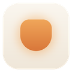

HearthpaneHearthpane is a free, open-source home screen (launcher) for smart displays such as Meta Portal, with a companion Android app, Portal Toolkit, for setting up and controlling the Portals in your home.
What it does
- A calm home screen with widgets: clock, weather, calendar, alarms, household list, photo memories.
- Music: sign in with your phone (Google's device sign-in) to play your own YouTube playlists, liked videos and subscribed channels on your Portal, using YouTube's official embedded player, with an on-screen queue and search.
- Photos: in Portal Toolkit, pick photos with Google Photos' picker and send them to your Portal's photo frame.
Source code
Hearthpane: github.com/rlchandani/portal-prime
Portal Toolkit: github.com/rlchandani/portal-toolkit
Privacy policy · Terms of use · Questions: open an issue